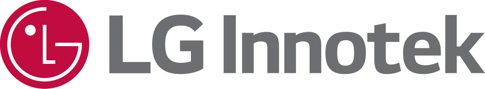
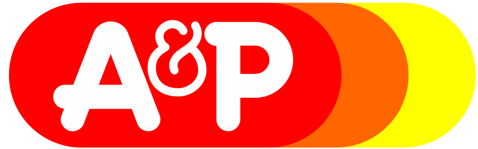
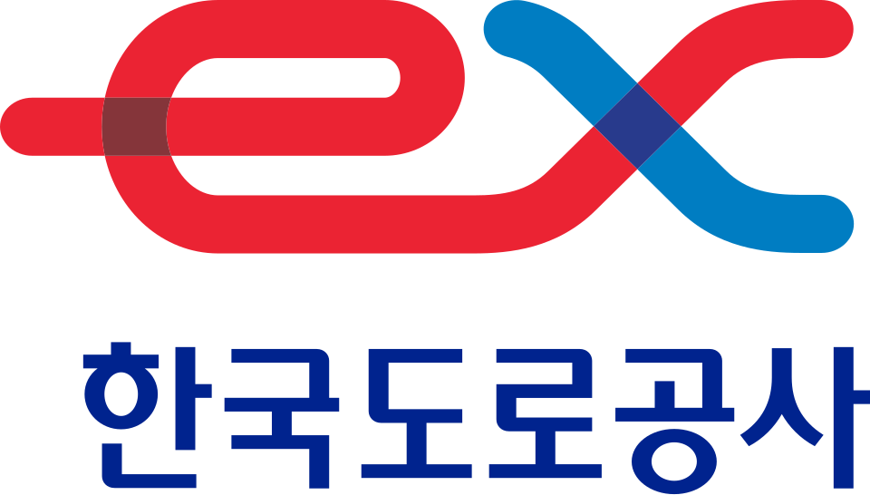
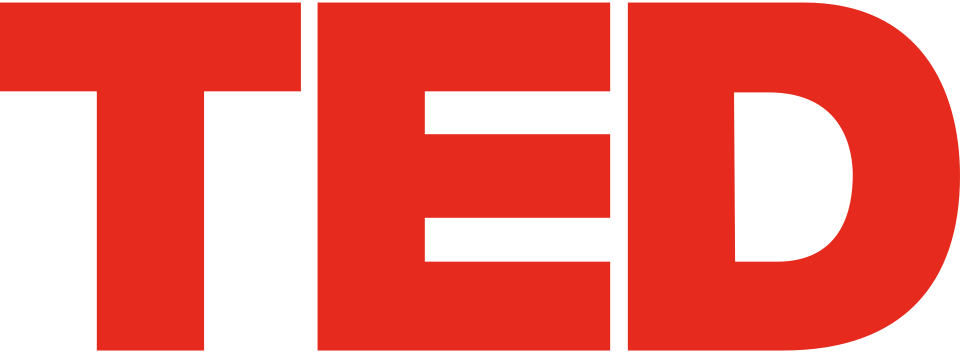
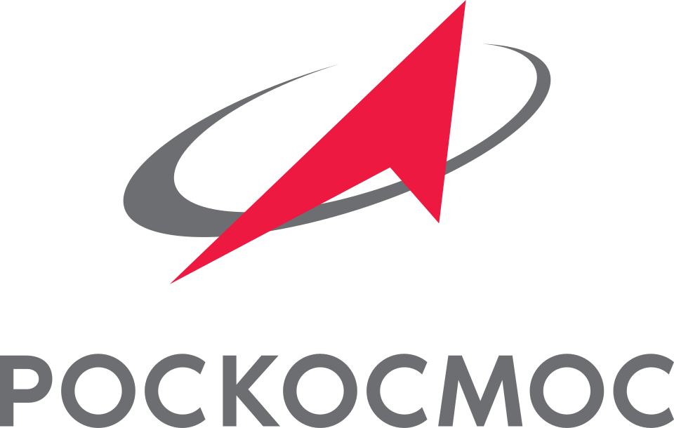
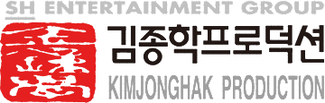
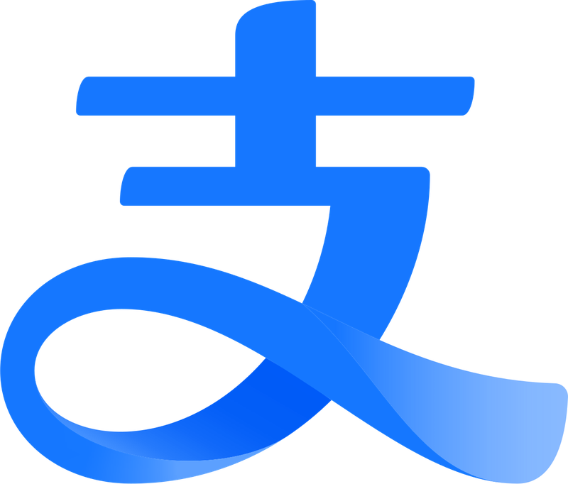
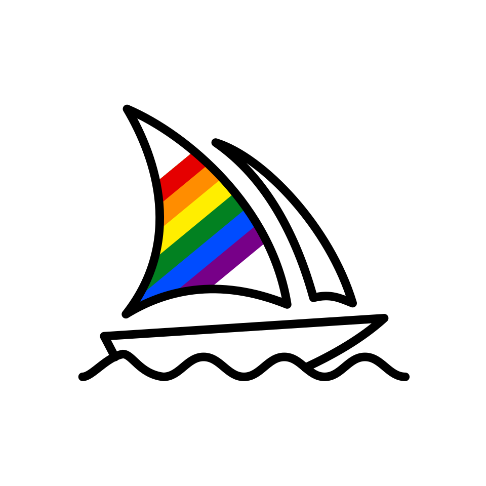
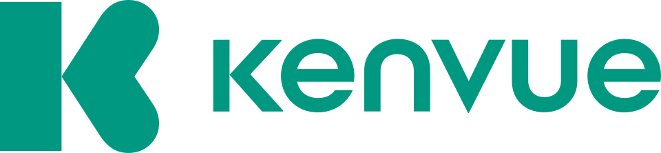

2월에 태어난 브랜드 85곳
2월에 태어난 브랜드 85곳을 탄생일 순으로 모았습니다. 페이스북(Facebook), 유튜브(YouTube), WhatsApp가 모두 2월생입니다.
2026년 2월, 주년을 맞는 브랜드
- 150주년
 필라델피아 미술관(Philadelphia Art Museum)1876년 2월 탄생
필라델피아 미술관(Philadelphia Art Museum)1876년 2월 탄생 - 90주년
 리코(Ricoh)1936년 2월 6일 탄생
리코(Ricoh)1936년 2월 6일 탄생 - 80주년스트라이커(Stryker Corporation)1946년 2월 20일 탄생
- 70주년월트 디즈니 레코드(Walt Disney Records)1956년 2월 4일 탄생
- 50주년

LG이노텍(LG Innotek)1976년 2월 24일 탄생 - 50주년
 LIG넥스원(LIG Nex1)1976년 2월 25일 탄생
LIG넥스원(LIG Nex1)1976년 2월 25일 탄생 - 50주년
 LIG 디펜스&에어로스페이스(LIG Defense&Aerospace)1976년 2월 25일 탄생
LIG 디펜스&에어로스페이스(LIG Defense&Aerospace)1976년 2월 25일 탄생 - 40주년
 픽사(Pixar)1986년 2월 3일 탄생
픽사(Pixar)1986년 2월 3일 탄생
2월 탄생 달력
날짜까지 확인된 62곳을 날짜 칸에 놓았습니다.
- 1Texas Pacific Land Trust선 레코드+5
- 2
- 3임페리아픽사
- 4크롬바커 바이젠바카디+2
- 5알리안츠디에스 오토모빌
- 6리코홈디포
- 7KT지니뮤직라쿠텐
- 8코크 인더스트리즈나스닥 주식회사+1
- 9허쉬아에로플로트
- 10에니비야디+3
- 11CBeebies
- 12
- 13
- 14매일유업마이크로칩 테크놀로지+4
- 15한국도로공사
- 16캐나디안 퍼시픽 철도
- 17A&P아시아나항공
- 18몬조
- 19서울보증보험
- 20스트라이커폭스콘
- 21제너럴 다이내믹스대한전선+2
- 22
- 23TED켄뷰
- 24LG이노텍썬 마이크로시스템즈+3
- 25LIG넥스원LIG 디펜스&에어로스페이스+2
- 26
- 27
- 28대웅제약Albemarle Corporation+1
- 29
2월생 브랜드 연대순
 크롬바커 바이젠(Krombacher Brauerei)독일 · 식음료
크롬바커 바이젠(Krombacher Brauerei)독일 · 식음료
A&P리테일·커머스 바카디(BACARDÍ)식음료
바카디(BACARDÍ)식음료- 필라델피아 미술관(Philadelphia Art Museum)미디어·엔터테인먼트
- 캐나디안 퍼시픽 철도(Canadian Pacific Railway)캐나다 · 모빌리티
- Texas Pacific Land Trust미국 · 에너지·산업재
 알리안츠(Allianz SE)독일 · 금융
알리안츠(Allianz SE)독일 · 금융 허쉬(The Hershey Company)미국 · 식음료
허쉬(The Hershey Company)미국 · 식음료 산토리(Suntory)일본 · 식음료
산토리(Suntory)일본 · 식음료 컨버스(Converse)미국 · 스포츠·아웃도어
컨버스(Converse)미국 · 스포츠·아웃도어 시마노(Shimano)일본 · 스포츠·아웃도어
시마노(Shimano)일본 · 스포츠·아웃도어 아에로플로트(Aeroflot)러시아 · 여행·호스피탈리티
아에로플로트(Aeroflot)러시아 · 여행·호스피탈리티- 임임페리아(Imperia)브랜드·비즈니스
 데상트(Descente)일본 · 스포츠·아웃도어
데상트(Descente)일본 · 스포츠·아웃도어- 리코(Ricoh)일본 · 기술·전자
 코크 인더스트리즈(Koch, Inc.)미국 · 에너지·산업재
코크 인더스트리즈(Koch, Inc.)미국 · 에너지·산업재- 스트라이커(Stryker Corporation)미국 · 헬스·제약
 산요 전기(Sanyo)일본 · 기술·전자
산요 전기(Sanyo)일본 · 기술·전자 보해양조(Bohae)한국 · 식음료
보해양조(Bohae)한국 · 식음료 선 레코드(Sun Records)미국 · 미디어·엔터테인먼트
선 레코드(Sun Records)미국 · 미디어·엔터테인먼트 제너럴 다이내믹스(General Dynamics)미국 · 에너지·산업재
제너럴 다이내믹스(General Dynamics)미국 · 에너지·산업재 에니(Eni)이탈리아 · 에너지·산업재
에니(Eni)이탈리아 · 에너지·산업재 대한전선(Taihan Cable & Solution)한국 · 에너지·산업재
대한전선(Taihan Cable & Solution)한국 · 에너지·산업재- 월트 디즈니 레코드(Walt Disney Records)미국 · 미디어·엔터테인먼트
 SK에코플랜트(SK ecoplant)한국 · 에너지·산업재
SK에코플랜트(SK ecoplant)한국 · 에너지·산업재- 금호건설(Kumho Engineering and Construction)한국 · 홈·라이프스타일
 매일유업(Maeil Dairies)한국 · 식음료
매일유업(Maeil Dairies)한국 · 식음료
한국도로공사(Korea Expressway Corporation)한국 · 모빌리티- 서서울보증보험(Seoul Guarantee Insurance Company)한국 · 금융
 버진 그룹(Virgin Group)영국 · 브랜드·비즈니스
버진 그룹(Virgin Group)영국 · 브랜드·비즈니스 나스닥 주식회사(Nasdaq, Inc.)미국 · 금융
나스닥 주식회사(Nasdaq, Inc.)미국 · 금융 롯데리아(Lotteria)한국 · 식음료
롯데리아(Lotteria)한국 · 식음료- 폭스콘(Foxconn)기술·전자
- LG이노텍(LG Innotek)한국 · 기술·전자
- LIG넥스원(LIG Nex1)브랜드·비즈니스
- LIG 디펜스&에어로스페이스(LIG Defense&Aerospace)한국 · 기술·전자
 홈디포(The Home Depot)미국 · 리테일·커머스
홈디포(The Home Depot)미국 · 리테일·커머스 대웅제약(Daewoong Pharmaceutical)한국 · 헬스·제약
대웅제약(Daewoong Pharmaceutical)한국 · 헬스·제약 롯데면세점(Lotte Duty Free)한국 · 리테일·커머스
롯데면세점(Lotte Duty Free)한국 · 리테일·커머스 썬 마이크로시스템즈(Sun Microsystems)미국 · 기술·전자
썬 마이크로시스템즈(Sun Microsystems)미국 · 기술·전자 Always이탈리아 · 뷰티·퍼스널케어
Always이탈리아 · 뷰티·퍼스널케어
TED미국 · 미디어·엔터테인먼트- 픽사(Pixar)미국 · 미디어·엔터테인먼트
 TSMC대만 · 기술·전자
TSMC대만 · 기술·전자 아시아나항공(Asiana Airlines)한국 · 여행·호스피탈리티
아시아나항공(Asiana Airlines)한국 · 여행·호스피탈리티 마이크로칩 테크놀로지(Microchip Technology)미국 · 기술·전자
마이크로칩 테크놀로지(Microchip Technology)미국 · 기술·전자 이드 소프트웨어(Id Software)미국 · 미디어·엔터테인먼트
이드 소프트웨어(Id Software)미국 · 미디어·엔터테인먼트 KT지니뮤직(KT Genie Music)한국 · 미디어·엔터테인먼트
KT지니뮤직(KT Genie Music)한국 · 미디어·엔터테인먼트 블리자드 엔터테인먼트(Blizzard Entertainment)미국 · 미디어·엔터테인먼트
블리자드 엔터테인먼트(Blizzard Entertainment)미국 · 미디어·엔터테인먼트
로스코스모스(Roscosmos State Corporation)러시아 · 기술·전자 유로윙스(Eurowings)독일 · 여행·호스피탈리티
유로윙스(Eurowings)독일 · 여행·호스피탈리티 스마트(Smart)스위스 · 모빌리티
스마트(Smart)스위스 · 모빌리티 현대트랜시스(Hyundai Transys)한국 · 모빌리티
현대트랜시스(Hyundai Transys)한국 · 모빌리티 Albemarle Corporation미국 · 에너지·산업재
Albemarle Corporation미국 · 에너지·산업재 비야디(BYD Company)중국 · 모빌리티
비야디(BYD Company)중국 · 모빌리티- SM 엔터테인먼트(SM Entertainment)한국 · 미디어·엔터테인먼트
 주니퍼 네트웍스(Juniper Networks)미국 · 기술·전자
주니퍼 네트웍스(Juniper Networks)미국 · 기술·전자 YG 엔터테인먼트(YG Entertainment)한국 · 미디어·엔터테인먼트
YG 엔터테인먼트(YG Entertainment)한국 · 미디어·엔터테인먼트 라쿠텐(Rakuten Group, Inc.)일본 · 리테일·커머스
라쿠텐(Rakuten Group, Inc.)일본 · 리테일·커머스 VM웨어(VMware)미국 · 기술·전자
VM웨어(VMware)미국 · 기술·전자
김종학 프로덕션(Kim Jong-hak Production)한국 · 미디어·엔터테인먼트 위메이드(Wemade)한국 · 미디어·엔터테인먼트
위메이드(Wemade)한국 · 미디어·엔터테인먼트 트립어드바이저(Tripadvisor)미국 · 브랜드·비즈니스
트립어드바이저(Tripadvisor)미국 · 브랜드·비즈니스 중국석유화공(Sinopec)중국 · 에너지·산업재
중국석유화공(Sinopec)중국 · 에너지·산업재 무신사(MUSINSA)리테일·커머스
무신사(MUSINSA)리테일·커머스 CBeebies영국 · 미디어·엔터테인먼트
CBeebies영국 · 미디어·엔터테인먼트 토리 버치(Tory Burch)미국 · 패션·럭셔리
토리 버치(Tory Burch)미국 · 패션·럭셔리
알리페이(Alipay)금융 페이스북(Facebook)미국 · 기술·전자
페이스북(Facebook)미국 · 기술·전자- 플리커(Flickr)기술·전자
 하이브(HYBE)한국 · 미디어·엔터테인먼트
하이브(HYBE)한국 · 미디어·엔터테인먼트 몰슨 쿠어스(Molson Coors Brewing Company)미국 · 식음료
몰슨 쿠어스(Molson Coors Brewing Company)미국 · 식음료 유튜브(YouTube)미국 · 미디어·엔터테인먼트
유튜브(YouTube)미국 · 미디어·엔터테인먼트 Fidelity National Information Services미국 · 금융
Fidelity National Information Services미국 · 금융 텀블러(Tumblr)미국 · 미디어·엔터테인먼트
텀블러(Tumblr)미국 · 미디어·엔터테인먼트 고릴라 글래스(Gorilla Glass)기술·전자
고릴라 글래스(Gorilla Glass)기술·전자 디에스 오토모빌(DS Automobiles)프랑스 · 모빌리티
디에스 오토모빌(DS Automobiles)프랑스 · 모빌리티 스퀘어 (회사)(Block, Inc.)미국 · 금융
스퀘어 (회사)(Block, Inc.)미국 · 금융 WhatsApp기술·전자
WhatsApp기술·전자 몬조(Monzo)금융
몬조(Monzo)금융 Ingersoll Rand미국 · 에너지·산업재
Ingersoll Rand미국 · 에너지·산업재 이소모픽 랩스(Isomorphic Labs)AI·인공지능
이소모픽 랩스(Isomorphic Labs)AI·인공지능
Midjourney미국 · AI·인공지능
켄뷰(Kenvue)미국 · 헬스·제약 GE버노바(GE Vernova)미국 · 에너지·산업재
GE버노바(GE Vernova)미국 · 에너지·산업재
2월에 태어난 것으로 확인된 브랜드는 85곳입니다. 가장 오래된 곳은 1803년의 크롬바커 바이젠(Krombacher Brauerei), 가장 최근은 2023년의 GE버노바(GE Vernova)입니다. 2026년 2월에는 필라델피아 미술관(Philadelphia Art Museum)(150주년), 리코(Ricoh)(90주년), 스트라이커(Stryker Corporation)(80주년) 등 12곳이 주년을 맞습니다. 생일이 같은 브랜드도 있습니다. 2월 1일에는 Texas Pacific Land Trust(1888)와 선 레코드(Sun Records)(1952)와 롯데면세점(Lotte Duty Free)(1980), 2월 14일에는 매일유업(Maeil Dairies)(1969)와 마이크로칩 테크놀로지(Microchip Technology)(1989)와 SM 엔터테인먼트(SM Entertainment)(1995)가 태어났습니다. 설립연도가 확인된 브랜드는 85개이며 가장 오래된 곳은 1803년, 가장 최근은 2023년에 시작했습니다. 시기별로는 1900년 이전 9개, 1900~1949년 9개, 1950~1999년 43개, 2000년 이후 24개입니다. 수록 자료로는 로고 이미지 83개, 로고 변천 자료 11개, 연혁 타임라인 13개를 갖췄습니다. 이 가운데 73개는 공식 웹사이트가 일치하는 위키데이터 개체로 연결해 두었습니다. 날짜는 위키데이터, 위키백과 정보상자, 브랜드 본문 가운데 같은 연월로 확인되는 값만 썼고, 출처끼리 다르면 싣지 않았습니다.